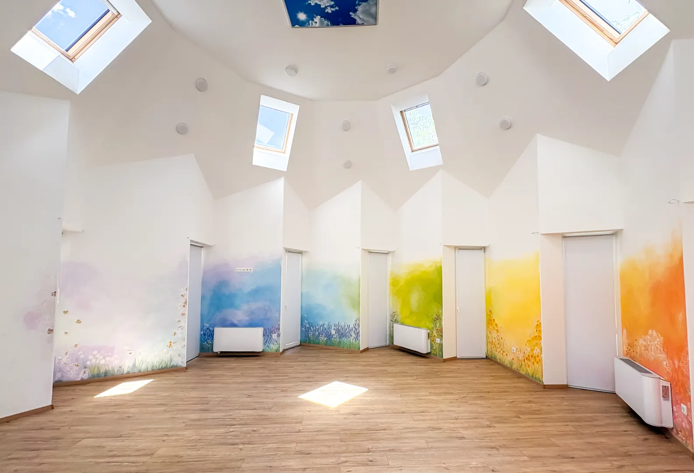
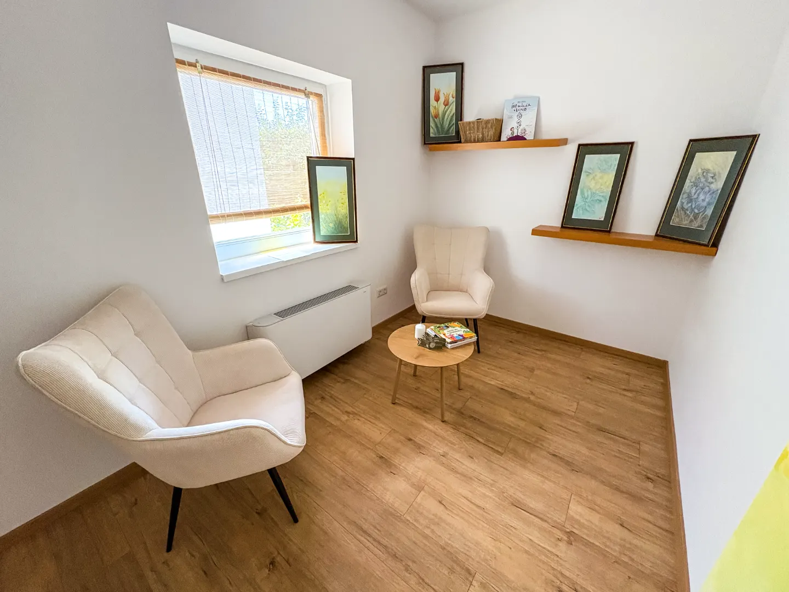
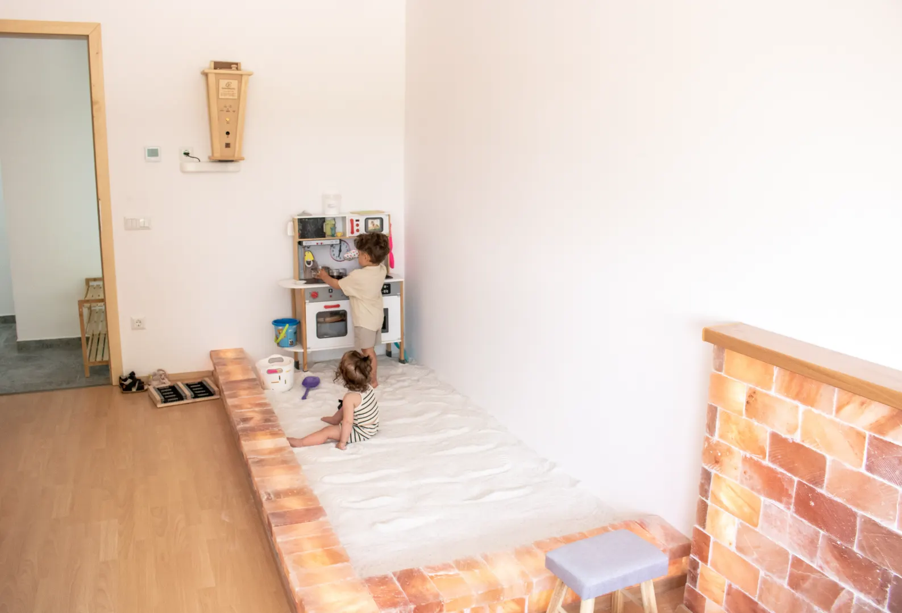
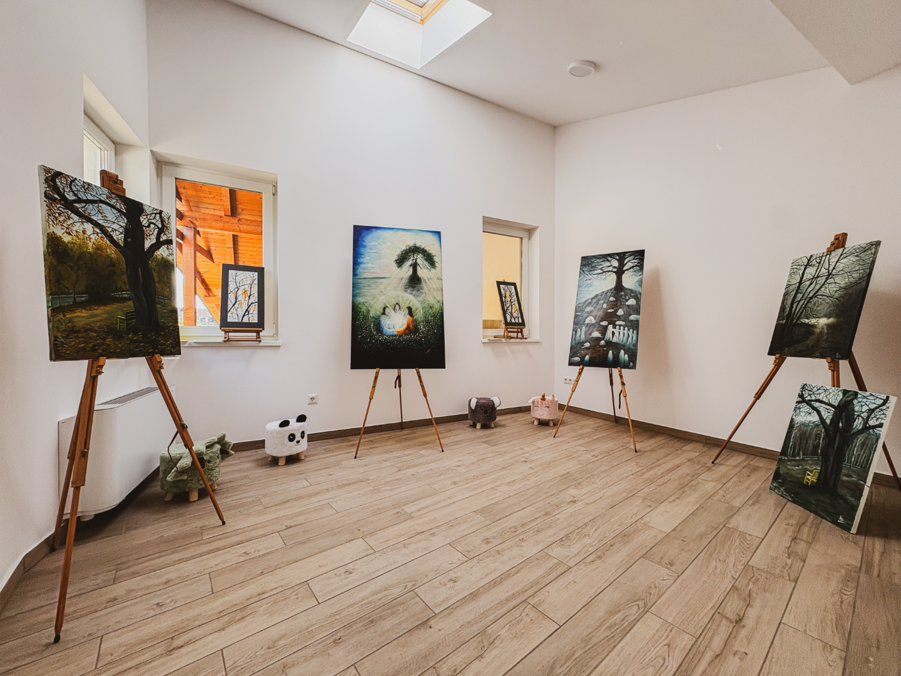
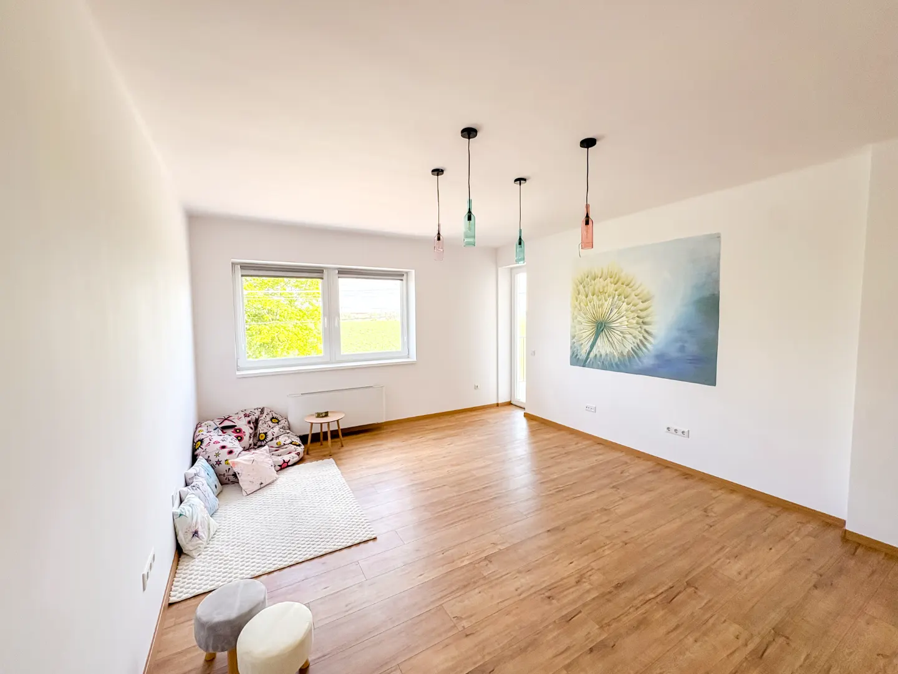
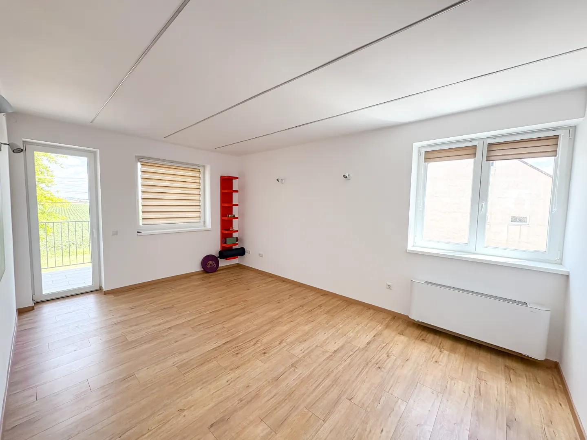
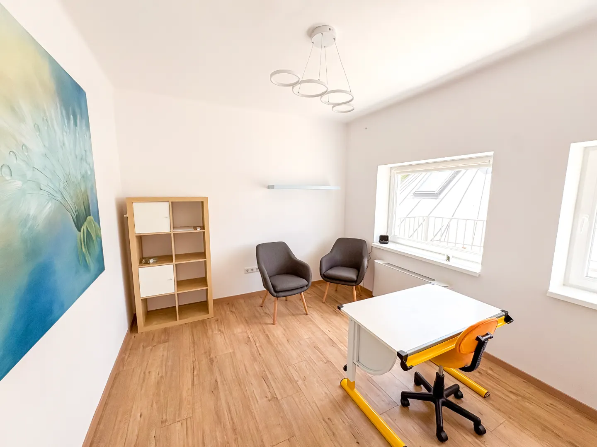

CSILLAG

Legnagyobb, csillag alakú terünk tornához, jógához, pilateshez vagy akár workshopokhoz, előadásokhoz és mozgásos alkalmakhoz is.
Körbenézek!Tereink
A LESZEK Központban hét különböző méretű és berendezésű helyiség várja azokat a szakembereket, akik nyugodt, igényes környezetet keresnek saját foglalkozásaikhoz. Tereink egyéni konzultációkhoz, páros folyamatokhoz, coaching alkalmakhoz, csoportos önismereti munkához, workshopokhoz és mozgásos programokhoz is rugalmasan használhatók.

Legnagyobb, csillag alakú terünk tornához, jógához, pilateshez vagy akár workshopokhoz, előadásokhoz és mozgásos alkalmakhoz is.
Körbenézek!
Meghitt tér egyéni konzultációhoz, coachinghoz és páros foglalkozásokhoz.
Körbenézek!
Sóhomokozóval kialakított, családbarát helyiség meseterápiás foglalkozásokhoz, gyermekprogramokhoz és felnőttek nyugodt kikapcsolódásához.
Körbenézek!
Külön bejáratú, privát tér érzékenyebb témákhoz és zavartalan szakmai munkához.
Körbenézek!
Tágas terem csoportos coaching-hoz, pszichodráma foglalkozásokhoz, mozgással kísért folyamatokhoz.
Körbenézek!
Rugalmas csoporttér női körökhöz, meditációhoz, hangfürdőhöz, családállításhoz és önismereti foglalkozásokhoz.
Körbenézek!
Világos, letisztult szoba egyéni konzultációkhoz és páros beszélgetésekhez.
Körbenézek!Térhasználat
A LESZEK terei minimum 60 perces idősávra, óránkénti beosztással, akár hosszú távú elköteleződés nélkül is foglalhatók. De ha kialakult időbeosztásod van, személyes megbeszélés után heti rendszerességgel is tudsz előre foglalni. A kényelmes váltás érdekében kérjük, hogy a foglalkozásokat 50–55 percre tervezd.
A lefoglalt térhasználat díja a tényleges kihasználtságtól függetlenül kerül elszámolásra. Foglalást mindig az adott hónap szabad időpontjaira lehet leadni, a helyiségek használatának feltétele pedig a házirend elfogadása.